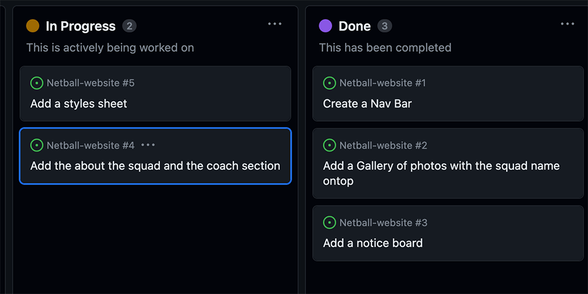

I have been asked to develop a website for a netball squad called Hot Shots run by Dave Farrelly,
this is a Wellington based squad
The objective is to create a website with information about the team and coaches, a place to find
information about trains, a draw and results page blight, and a notices page that can also be updated.
I also needed to make sure teh website was made fo rteh correct audience and was easy to undertsand and
gave clear infromation across to anyone using the website(players, parents, coaches).
Before starting the website I completed some User experince plannig. I looked at a few aspects to make sure my
website was created for the correct reassn and teh right audience. Below are a few thingsi looked at when
researching for my website.
I looked at the users that would be using this website and what they needed to see wehn looking online.
I also did some comeptition analysis I looked at other netball websites and deicde what aspects
of the website i liked and worked well for the website and what apsects didnt work as well
I also did research on other webistes that were not netball webistes and found aspects that i liked that
i could use as inspiration for my website
I also created drawn plans of what i pictured my website to look like (which can always change as the
website starts to be put together)
Link to user experience planning
Relevant Implications (Describe)
Intellectual Property
This intellectual property is about aspects like copyright, design rights and others. This is all about
the use of symbols and photos and information. Not using other people's information to create your
website is about using your data. When creating a website, it is important that the ideas, images and
text are not copied from another site without the permission of the person who owns the images or text,
etc. You want your website to be authentic so it is really important that you use your own ideas,
images and text so you don't copyright.
Accesibility
Accessibility is about the function of the website. This means all the information is correct, and
the website works the same on different browsers, as all devices are different. It is really important
when creating a website that it is accessible to other users. Not everyone has the same type of device;
some people look at phones or computers. Not only this, every device will be different which means the
screen size may be different so it is important to make sure the website works across a range of
different devices so everyone is able to access it and get the information they need.
Functionality
Functionality is about ensuring the app, website, or database is useful. This means giving out
information that is useful to people, adding only a little necessary information, and keeping it
compact but informative. Like accessibility, functionality is also about making sure it is functional
on different browsers and devices too. Not only is this really important that there are no glitches
or errors but if there are errors they are clearly labelled so the user knows what to do. Also, it is
important the website loads quickly. As Well as all that any links need to work properly so the website
runs smoothly and no user gets stuck trying to find the information they need.
Aesthetics
Aesthetics are essential when it comes to a website. Users look at sites and are more into them if the
website is pleasing. When it comes to the website, the CRAAP method can be helpful as it helps to
incorporate all aspects of a website that will improve the overall look of the website. Aestichs
is also about making sure the website is for the right audience. Based on who will be using it we
don't want it to be too childish-looking if there are older viewers but not too confusing for younger
kids trying to find their way around. We want to make it appealing for all users and clear and not too
overwhelming so the website can do its job.
Future proofing
Future-proofing is about being able to keep your website up to date. Making sure it can be easily
changed by users who may need to be sure of the website's works. Whether the information can be easily
altered and old data can be removed, adding new to update the website. It is important that the
website can be expanded and improved without messing with any of the pre-existing aspects of the
website. It is important the website can get altered easily so people who don't understand the website
code are still able to change it when it is needed without messing up and risk making mistakes with the
pre-existing code.
Boards and sprints
Here are my project backlogs for my pages. These were created at the start of teh deisgn
process to help create a timeline to understand what is the most important and less important to help get the
website completed to its best ablility so teh stakeholders like the website and it is accesible and has the
correct purpose

Sprint One
Brief
This first sprint aimed to create the website's front page. I started by gathering all the information about my page,
this included photos and all the text that i wanted to put on my home page of my website. Once all my
information was collected and all in one place I was able to place them all on the website as a rough
layout. I used Python to do this. After that, I wanted to style the rest of the page by adding
galleries and other things to make the home page enticing.
Project backlog
This is my project backlog, showing everything I needed to get done for the homepage of my website.
This photo was taken halfway through working through databases. A project backlog is to help create a timeline
of what needs to be completed for each sprint. The tasks are put in priority order this helps ensure that the
websites aspects that are more important are prioritised so the website is created to its best ability.
Reflect
This was the start of my website. I wanted to make sure the first page was visually pleasing. I
ensured I used similar colours around the whole page, making it manageable for the eyes. I liked how
it was clean and clear. There was no unnecessary information on the first page and everything was
laid out clearly.
I used this page as a tester to see how it worked, as I shrunk the website to ensure everything
would compact nicely. This helped me see how I needed everything to be laid out to make sure that
it would work with different-sized devices and browsers.
This was my first time working with Bootstrap, so I used the Bootstrap website to help me
understand how I could use that to my advantage and how to create different columns using Bootstrap.
That was the most challenging part, as I was new to it. I had to play around and test various
aspects of the website to ensure it was exactly how I wanted it.
Overall the look of the website was very clear. The feel was very welcoming and too harsh on the eyes. I made
sure my stakeholders found the homepage to be who they wanted it to be. I got them to test it and the coach
decided there was some information that didn't need to be there and the sizing of some aspects was not right
as well as finding errors that I was able to fix. The stakeholders found the website clear, easy to follow
and was ready for me to move on. The next steps are to start making the other pages to be able to complete
the website.
Here is osme aspects of my website that didn't work out when chnaging teh size of my browsers testong this
allowed me to fix all problems before moving on to the next aspect of the website.
Some interetsing code
I kept the two colours I used in an area together so I could pull from that any time I needed. This allowed me to
keep the colours of my page similar throughout to ensure my website flowed.
This means the database should work properly. This means the foreign keys that link tabel together
need to be correct so the correct members are associated with the news post they made. Also to keep
everything running smoothly the data needs to be consistent meaning the format of dates and times should
be kept the same using the SQLite format YYYY-MM-DD HH:MM:00”. To make sure databases are functional,
testing is important as well as creating entity relationship diagrams to see how everything should
connect with each other.
Future-proofing
Future-proofing is about being able to keep your website up to date. Any corrections made should be
made in one place and if needed in other tables they should be referenced using foreign keys. Foreign
key means if the member is authorised to update the notices the member table will have to be linked to
the notices table using a foreign key. This means that if there were any updates done to a name or a
otice it would be changed without needing to change a lot of different code. Whether the information
can be easily altered and old data can be removed, adding new information allows users to update the
website on the website rather than having to go through code and having to change a range of things
and altering what is already there.
Privacy
Privacy is about making sure the data from the website and personal data is kept private. Passwords
should be kept hidden when they are typing them. As Well as making sure that the data from the
databases is kept private meaning that when users access the webpage they should be taken to the
webpage not to the data folder. It is also important to respect users privacy so only collecting
information that is needed for the website so you're not extracting unnecessary private information
from users so there is less to keep private for them.
End user considerations
This aspect was ensuring the database was arranged and organised to meet the needs of the users.
It needs to be clear and easy to view as well as easy to understand. The database should be easy for
the user to understand so forms that allow users to change aspects of the website should be easy to
follow and should have validation to minimise errors and also help the user enter correct information
to avoid problems.
Boards and sprints
Sprint One
Brief
In this sprint, I wanted to start adding the aspect of databases to my webpage. I first started with my
notices section. I wanted to create a delete, add, and update section for this section. This allows
authorised users to update and change the notice section to make it more relevant and up-to-date. I
said the date and time and who submitted or made the notice change so people who know who made it
and when they made it could clearly understand what the notice is trying to say.
Plan
First, I created two tables: a notices table and a member table. The notice
table holds all the information about the notice so the title content, and the date. This is
connected to the member table, which has information on the coaching staff and the team members,
their emails and passwords, and whether they are authorised to make changes.
Tables are an excellent way to keep all information stored in one place. The tables
to the sides were created as a diagram to show how all my tables connect. The notices table is
combined with a member id associated with a member authorised to change the notice page.
Project backlog
This is my project backlog, showing everything I needed to get done for the homepage of my website.
This photo was taken halfway through working through databases.
Testing
In this sprint, I created a page that allowed me to test aspects of the database before adding it to the
website. Testing will enable me to try parts of my website to ensure it works before adding them to the
main website. As seen below, I tested to see if I could get information out of the tables and out onto a
page. I pulled out two notices, and from the photos, you can see that the tables are working, and I was
able to pull information out of them.
Reflect
Having the databases added, I was able to provide a way to update deleted and add new notices
without having to change the code in Pycharm. This meant it was easier for the users, in this case,
coaches, to update and ensure the website was updated so other users could get correct and
up-to-date information.
With this aspect of it, a few things needed to be improved. I wanted to create a scroll box because
as more notices are added, it starts to push down everything on the whole page. Creating a scroll
box means users can see all the notices without affecting the page's overall look. However, due to
how the database worked, it took a lot of work to add the scroll box as the code was constantly
changing, so next time, I'd want to work on that.
Also, in base plan for my notice page, I had an excellent gradient effect for the other notices.
Unfortunately, with databases, it is harder to create this effect as all the notices are changing,
and it could get too chaotic, so I had to choose one colour combination and stick with it.
Overall the page looked good and was functional, and it did what it needed to to make things easier for
the users. Having a update for teh notices allows the suer to update teh page without having to go
through the code and risk changing teh wrong code and causing errors. This way of updating/adding/deleting gives
the user a clear way to change teh webpage whcih is very important for a website.
Some interetsing code
This is the code that has cretaed my tables for my database. This code has helped me connect the tables together
using the forgein key which can be seen in the notices table. These tables ar every importnat as they are the
base of my databse.
drop table if exists notices;
drop table if exists member;
create table member(
member_id integer primary key autoincrement not null,
name text not null,
email text not null unique,
password text not null,
authorisation integer, not null
);
create table notices(
notices_id integer primary key autoincrement not null,
title text not null unique,
content text not null unique,
notice date date not null,
member_id integer not null,
foreign key(member_id) references member(member_id)
);
Sprint Two
Brief
In this sprint I wanted to add a login page. I need to add this because I only want authorised users
to update notices rather than anyone being able to update them. This allowed me to ensure that all the
information on the page was correct and had not been changed by random people. This means that everyone
was getting accurate information. It is important only authorised users like the coach can update the
page as this website was made to infrom players and parents however if anyone can update and change the
website the site is no use as the infromation won't be acurate.
Plan
To the right is the project backlog for this sprint of the databses. The tasks we neede to complete were
added to a pre exsisting project backlog. I added these tasks to the homepage's project backlog as the
homepage is teh main page and the login was a main aspect of teh databses as it mad eteh websiet more
reliable and accurate by only allowing authroised users to make changes.
Reflect
If you click the login butto you go to a login page. You enter your credentials if they are invalid,
an error will appear. There is also validation on the login page, if you have not entered a proper
email address it will let you know what you have doen wrong so you are abel to see clearly what has
happend and make the change.Once logged in, it will say who's logged in at the top of the page. The
login button will turn into a logout button once you are logged in this is so people can clealy see
hwo to logout so they dont leave tehre account logged in and can keep the website accurate.
I allowed only authorised users to be able to update the website. Only authorised users could see
the new, edit and delete buttons when logged in. This meant that the information on the page was
only getting updated by users who would know the correct information. This made my website more
realistic amd reliable and indicated that the information shared was accurate.
The next step for teh webpage would be to create a new databse. This datbase will allow the
authorised users to make changes to the draws and results. Wether that means updating, deleting or
even adding a new draws or enetring in a new result. This part of the database is very importnat as it
is a place where most common users of teh website go as they need to know the time for their games
everyweek.
This is a video of how the login page works
Overall the login aspect of my databse is very important it helps to keep everything on the website relaible. As
this is a website for a sports squad it is very importnat you are porviding the, weith correct times, dates
and reuslts as they need to be ready. The websiet is a way to inform members of the sqaud aswell as their
caregivers what is going on each week. Communictaions in sports teams are very impirtnat so this website needs
to be reliable and accurate to keep the trust in the Hot Shots Netball squad and keep people wnating to play
for the squad. Thsi login system helps to keep everything running smoothly.
Sprint Three
Brief
In this sprint, I wanted to create a delete, add, and update section for my draws and results page.
I also attached the login authorisation to this page. This allows authorised users to edit, add and
change the draws and results section to make it more relevant and up-to-date and avoid risking people
who have no idea about the accurate information changing the draws and results so they are wrong.
I wanted to connect the draws and results page so that when a draw is added, it will show with no scores
on the results page, so it is easy to add the scores when it is time and makes less confusion and keeps
evrything running more smoothly and just keeps the page more connected.
Plan
ERD or Entity relationship diagrams display the contents of a databases(so what is included
in each table). They help us to visualise how data is connected in a general way, and is useful for
constructing databases. They help us clearly see how everything connects and be able to create a
database that flows on nicely.
To the left is a photo of my diagram. This includes all the tables i have needed to create to make
every aspect of my database work. It also shows how everything connects. This allowed me to have a
base plan and be able to create my database in a way that everything ran smoothly.
Project backlog
This is my project backlog, showing everything I needed to get done for the draws and reults page of my website.
This photo also has teh etask i needed to do before starting datbases these were to
create te basis of teh webpage without any updating or adding to happen. All the task for datbases
were either in motion and i had staretd them or still yet to be staretd when i took the photo.
Testing
In this sprint, I used the testing page I created in sprint 4. Testing enabled me to try parts of my website
to ensure they worked before adding them to the main website. As seen below, I tested to see if I
could get information out of the tables and out onto a page. I pulled out the information on my game table.
This ensured that I could retrieve the data from the table before I put all the rest of the code and
connected it to my webpage. Doing these little tests helps me to make sure less errors occur. When an
error happens in the webpage it is harder to sift through pages of code instead of a small amount of code.
These test help to tets to see fi anything is wrong so we can make things less likely to crash.
Reflect
I liked how I could incorporate my tables with databases for this aspect of my webpage. I liked
this as it gave a clean look to the page and didn't cause any problems. I had to add different
variables to ensure that all the dates were grouped on the draws page, which made the coding
difficult. Unlike the notices page, the styling wasn't thrown off, and everything was crisp
and clear.
I also like how only authorised users can change anything on the draws & results page.
This meant that the information on the page was only getting changed by users who knew the correct
information. This ensured everyone using the website was being provided with accurate
information.
I allowed only authorised users to update the draws and results. Only authorised users could see
the new, edit and delete buttons when logged in. This meant that the information on these draws
and results pages was accurate, so people knew the correct information. I liked how when a game
was added to the draws page, it was added to results with no scores, so the score can be updated
on the score page when a game is finished. It was an excellent way to have the page as the draws
and results pages connected, making everything run more smoothly.
The only thing that didn't work was that you could enter the same team playing each other,
which, if I were going to develop this further, I would learn how to work with. This is an issue as
in a netball game teh same exact team is unable to play with each other. This is inaccurate
infromation. As of rigth now i am unsure on how to work around this, so the solution for now is if
this occurs an authorised user either needs to login and update or delete the draw. This is not
the best solution but it is what will work for now until futher development.
Overall I liked how my page turned out. I like how authorised users were the only ones to update and change the
pages. This meant that the information on the page was always accurate as no one was randomly playing with it.
I also like how the colour scheme was kept the same throughout. Thai allowed the pages to be clear and to
flow nicely. It also made everything feel more connected, which is nicer for users to look at. Too much
information on each page makes users feel confident, which is essential if you want your website to be
functional. I also ensured clear labels so users knew where to go if they needed to see the webpage.
Overall, I liked how it turned out that I need to work on a few things that I need to work on developing
more to do with my database which have talked about in my reflections. As well as styling with databases,
for example, my notices page was originally a gradient in colour. Unfortunately, with databases, I had to take them out, so fixing that would be the next step. Overall, the databases does what it needs to do, provides people with correct information that is up to date and is also reliable.
This is a video of how the Draws and Results page works. It shows how to update the
draws and results pages and how everything is connected. In the video a new draw is added in, a game is deleted,
a game is also updated. This is all connected to teh results page which is shown in the video. The results page
is also updated which can be seen in teh video. Not only this but authorised users are the only users that can
update the draws and results. This hleps to keep the page updated without having to go through the code. Going
through the code increases the chance that soemthing will go worng and a n error will occur. Keeping everything able
to be changed on teh website makes the website easier to use.
Relevant Implications Addressing
Functionality
Another critical aspect of a database is functionality. I tested different aspects of my website to
ensure everything was running smoothly. When I first started creating my databases, I tested to see if
I could pull information from the table about notices and what members wrote the notices. This was
important as it allowed me to see if I could get this information out before adding it to the rest of
my website. This ensured there weren't any problems with the extraction of data. If there was, I could
tweak the code before adding it to my main page. I tested throughout the databases and a few tests are
seen in the sprints above. Testing was essential to make sure my database was functional. I also ensured
that no data was written twice for different tables. I ensured this by connecting tables with foreign
keys. This helped ensure that information was not printed twice or inaccurate and doubled. I could
extract information from different tables and print them out onto the page. This meant I didn't have
to rewrite information repeatedly and made everything more concise and clear. This also meant if
something was updated, it changed on every table that included the information, rather than having to
change multiple aspects simultaneously. For example, if I changed a member's name, it would update the
rest of the databases as the tables are all connected. This is all done with the foreign keys. I also
ensured I kept the SQLite format “YYYY-MM-DD HH: MM:00” for dates. This allowed the data to be used all
around the databases without causing any crashes. Keeping the same format so that everything would run
smoothly, using the same format allowed me to use that information and just extract the parts I needed.
This means I can use the date all over the database without any errors because all the data format is
the same. Keeping the format ensures fewer errors and allows everything to pass through the same and
run smoothly. The functionality of databases is very important, and keeping the format of aspects
similar is very important to lower the risks of errors.
Future-proofing
An important, relevant implication is future-proofing. How my database is created allows me to easily
keep it up to date, whether it is adding new aspects of the database or updating or deleting aspects
of the database. Using tables allows me to add new draws or notices as examples without sifting through
the code. Having tables will allow me to add new database features (like connecting the register page
and becoming a member) without updating any tables already there. This lowers the risk of causing
errors as you're not messing with anything that is pre-existing. This makes it easier for users to
update the website without having an understanding of the makeup of the website, as they don't have
to change any preexisting code. As said above, the foreign keys help with updating the webpage. This
means updates would only have to happen in the table, and any aspects of the database that are connected
with the table you have changed will be updated. Also, updating exciting aspects of the website, like
the draws and results, can happen on the web page; this can happen due to the databases. This makes it
easier for users as there are clear forms only authorised users can fill out to add, delete and update
the results and notices of the draw. This makes updating the website much clearer and doesn't lower the
risk of an unexpressed user trying to go through the code and missing the code. Allowing authorised
users only to update the website makes sure the information on the page is reliable and accurate,
making the website one that people can rely on and trust as the days go by.
.
Privacy
When creating a database for a netball squad, privacy was very important. Privacy is essential to
protect individuals, as in the user's personal and squad's data. It is important to protect users'
information as if it gets leaked, people will not be happy as that is a breach of their privacy but
can also buy them at risk and make them less safe. The main way I have protected people's privacy is
by not asking for too much personal information. Being a website like this, we are in charge of
collecting and protecting users' information, dn it's our job to ensure their information is kept safe.
I just collected their Name, ages and email to communicate with them if they join the squad. I have not
asked for their phone number or address, which protects their location and phone number if anything
happens and their information gets out. I also didn't want to collect information that is not needed
in the databases for a few reasons: one, it takes up unnecessary space. But the main reason is that
it's unnecessary personal information that we have to keep protected. Keeping the amount of personal
information to a minimum helps to protect the user that's providing us with the information but makes
things easier for us as there is less information to keep protected. One problem is that in the
database, the password that people log in to their account with is not protected in the database if
someone has access to the code, they can see people's passwords which is a great way of protecting
people's privacy if I were to develop my database, further, this would be an area which would need
some work and focus. I want the website to respect people's privacy so some aspects might need further
development.
End user considerations
The information I have put in a database is accessible through a website. It is essential that the data
accessible on the website is laid out in a way the users would be familiar with. This meant the styles,
colours, and fonts followed the trend of the rest of the website. It is crucial that this happens so
the users do not get too overwhelmed with multiple different styles. It also helps them to feel
confident that they are still on the same website as all the looks of the way the data is portrayed
is the same as the rest of the website. I did this by ensuring the colours lined up, for example, when
adding new data and updating pre-existing data forms, are used. These forms can be styled to follow the
trend of the rest of the webpage. This told them they were updating or adding information to the right
webpage not only when a change has been made to the page, whether it is a new notice or an update to
the notices page; for example, when you submit the change it takes you back to the page where your
data will be displayed so the user can get confirmation that here change has been made, an error page
will also be displayed when something goes wrong to help the user know what they have done wrong and
how to fix it.